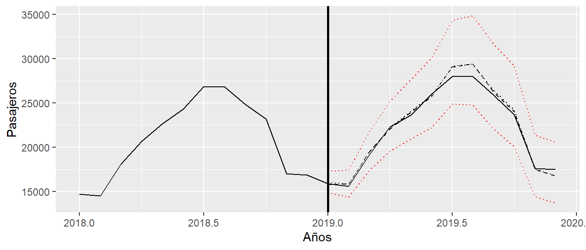

Apéndice B: Tutorial de UComp
En este tutorial se explican de forma sucinta los rudimentos básicos para utilizar objetos de series temporales que se usan en la librería UComp, así como el funcionamiento de la librería en sí. No se trata de una documentación exhaustiva, sino de una explicación sucinta de la lógica con la que se ha construido la librería.
Objetos de series temporales
En este libro y en la librería UComp hemos adoptado siempre una versión lo más sencilla posible de tratar objetos con fechas en cada uno de los lenguajes. Se comenta a continuación cada uno de los casos.
La librería se suministra con tres series temporales que sirven de ejemplo para todos los capítulos del libro. Se trata de airpas, las llegadas mensuales a España de viajeros extranjeros por avión; gdp, el PIB trimestral español en términos reales; e ipi, el índice de producción industrial mensual español.
En R UComp prioriza el uso de objetos tipo ts, aunque también está preparada para recibir objetos tipo tsibble, pero nunca devuelve objetos de esta clase. Con los objetos ts se pueden utilizar las funciones estándar, como son head, tail, window, etc. De hecho, se debe evitar cortar objetos ts con el operador de slicing habitual (:) como si fueran vectores o matrices estándar porque lo que se obtiene como respuesta es un vector o matriz, nunca una serie temporal.
El siguiente código muestra un ejemplo en el que se genera una serie temporal mensual comenzando en enero de 2000. Se genera una variable yVector que NO es una serie temporal, sino un vector, y otra variable yTs que SÍ se una serie temporal porque se usa el comando window.
En Python UComp utiliza objetos de series temporales de pandas, lo que significa que todas las funciones estándar de esa librería se pueden utilizar para su manejo.
Adicionalmente, y para dar una sensación de uso similar a R, se han añadido dos funciones que pueden ser de gran utilidad. Se trata de ts y window.
El siguiente código muestra un ejemplo en el que se genera una serie temporal mensual comenzando en enero de 2000 y se genera una serie yTs que contiene solo el año 2003.
import pandas as pd
from UComp import *
y = ts(np.random.rand(100), start="2000-01-31", freq="m")
yTs = window(y, "2003-01-31", "2003-12-31")En MATLAB/Octave no se utilizan objetos de series temporales en la libraría UComp, aunque algunas de las salidas de las funciones sí que devuelven objetos tipo table con índices de filas que son fechas. Esto provoca que el usuario tenga que utilizar reiteradamente en muchas de las funciones el período estacional como entrada. Es necesario estar alerta, porque puede provocar errores.
Familias de modelos de UComp
El nombre de la librería obedece al proyecto inicial que consistía en implementar modelos de componentes no observables de forma automática (Unobserved Components en inglés, ver Pedregal, 2022). Más tarde el proyecto se amplió incluyendo los modelos de suavizado exponencial con una sola fuente de error (Single Source Of Error, SSOE) y los mismos con múltiples fuentes de error (Multiple Sources Of Error, MSOE).
Los nombres de las funciones y la sintaxis de todas ellas es muy similar, como se puede ver en la Tabla 1, en la que se indican los nombres de las funciones principales que se encargan de la modelización para cada uno de las familias de modelos. Los nombres de las funciones indican la acción y van precedidos por un asterisco que puede ser sustituido por ETS, PTS o UC para el suavizado exponencial SSOE, MSOE y componentes no observables, respectivamente.
| Funciones | Descripción |
|---|---|
ETS, PTS, UC
|
Corre todas las demás funciones para realizar una modelización completa |
*model |
Igual que el anterior, pero solo corre la estimación y predicción para conseguir una ejecución más rápida cuando solo se requiere predicción |
*components |
Estima los componentes óptimos de cada familia de modelos |
*validate |
Calcula y muestra la tabla de estimación con algunos tests de diagnóstico |
Algunas aclaraciones:
- En todas aquellas situaciones en las que la velocidad de ejecución no sea una restricción, lo más cómodo es ejecutar directamente
ETS,PTSoUC. - La sintaxis de todas las funciones es muy parecida, aunque no idéntica. Los argumentos de entrada comunes a las funciones principales se encuentran en la Tabla 2.
- Para los modelos de componentes no observables existen funciones adicionales,
UCfilter,UCsmoothyUCdisturbque corren el filtro de Kalman, el algoritmo de suavizado o el algoritmo conocido como disturbance para obtener los valores óptimos de los estados y/o perturbaciones del modelo (ver Pedregal, 2022). -
*componentsy*validateson funciones que admiten de entrada un modelo y devuelven otro modelo, lo habitual será queq el modelo de entrada y salida sean el mismo. En Python las funcionescomponentsyvalidateson en realidad métodos de los objetos correspondientes (ver ejemplos más abajo).
| Nombre | Descripción |
|---|---|
y |
Serie temporal univariante. Es el único argumento de entrada obligatorio. Si es un vector sin fechas, el argumento s también será obligatorio |
s |
Periodo estacional, número de observaciones por año. En MATLAB/Octave es una entrada obligatoria, puesto que en ese caso y es un vector |
u |
Matriz de variables exógenas de entrada. |
model |
Modelo que se desea estimar. Si no se especifica ninguno concreto se identifica el mejor de entre todos los modelos disponibles dentro de cada familia. Ver la ayuda para familiarizarse con las posibilidades en cada caso |
h |
Horizonte de predicción |
criterion |
Criterio de información para identificación automática. Puede ser aic, bic o aicc
|
lambda |
Parámetro \(\lambda\) de la transformación Box-Cox. NULL or NaN para estimarlo |
armaIdent |
Identificación de modelos con ruido ARMA |
verbose |
Muestra resultados intermedios a medida que se identifica o se estiman los modelos |
El término lambda es una palabra reservada en Python, por lo que dicho argumento se llama lambdaBoxCox.
Los modelos ETS cuentan además con dos parámetros adicionales para la estimación de intervalos de confianza mediante simulación bootstrap, se trata de bootstrap y nSimul.
Los modelos UC permiten la identificación automática de atípicos mediante la entrada outlier que indica el número de desviaciones típicas a partir del cual se analiza si los residuos que lo sobrepasan son o no atípicos.
La salida de las funciones es un objeto (lista o estructura) con una serie de campos. Los más habituales se muestran en la Tabla 3.
| Nombre | Descripción |
|---|---|
yFor |
Vector de predicciones óptimas |
yForV |
Varianza de predicciones para intervalos de confianza |
comp |
Componentes estimados |
A continuación se muestran algunos ejemplos sencillos de las funciones anteriores.
Estimación de un modelo ETS y PTS para la serie de pasajeros de avión españoles con los datos transformados en logaritmos desde 2008 hasta diciembre de 2018. Las predicciones se estiman para el año 2019 (h) y se muestra la tabla de estimación del modelo ETS, así como los resultados intermedios (verbose).
--------------------------------------------------------
Model AIC BIC AICc
--------------------------------------------------------
(A,N,N): 0.9397 0.9834 0.9397
(A,N,A): -1.6453 -1.3177 -1.6150
(A,A,N): 0.9697 1.0570 0.9697
(A,A,A): -1.6208 -1.2495 -1.5829
(A,Ad,N): 0.9835 1.0927 0.9835
(A,Ad,A): -1.6027 -1.2096 -1.5573
(M,N,N): 0.9400 0.9837 0.9400
(M,N,A): -1.6297 -1.3021 -1.5994
(M,N,M): -1.6182 -1.2906 -1.5879
(M,A,N): 0.9691 1.0565 0.9691
(M,A,A): -1.6051 -1.2339 -1.5673
(M,A,M): -1.5937 -1.2225 -1.5558
(M,Ad,N): 0.9824 1.0915 0.9824
(M,Ad,A): -1.6224 -1.2293 -1.5770
(M,Ad,M): -1.6153 -1.2222 -1.5698
--------------------------------------------------------
Identification time: 0.08300 seconds
--------------------------------------------------------
-------------------------------------------------------------
Model: ETS(A,N,A)
Box-Cox lambda: 1.00
Q-Newton: Gradient convergence.
-------------------------------------------------------------
Param S.E. |T| |Grad|
-------------------------------------------------------------
Alpha: 0.8060 0.0827 9.7450 1.382e-10
Gamma: 1.000e-08 1.285e-02 0.0000 6.848e-13
-------------------------------------------------------------
AIC: -1.6453 BIC: -1.3177 AICc: -1.6150
Log-Likelihood: 123.5892
-------------------------------------------------------------
Summary statistics:
-------------------------------------------------------------
Missing data:
Q( 1): 0.0008 Q( 4): 5.1667
Q( 8): 21.5931 Q(12): 33.3406
Bera-Jarque: 90.3046 P-value: 0.0000
H( 46): 0.5186 P-value: 0.0281
Outliers (>2.7 ES): 4
Q( 1): 0.4329 Q( 4): 1.0481
Q( 8): 14.7442 Q(12): 37.5224
Bera-Jarque: 4.8024 P-value: 0.0906
H( 44): 0.4644 P-value: 0.0124
-------------------------------------------------------------------------------------------------------------------------
Identification of PTS models:
------------------------------------------------------------
Model AIC BIC AICc
------------------------------------------------------------
(N,N,N): -1.0470 -1.0033 -1.0470
(A,N,N): -0.1044 -0.0389 -0.1044
(N,N,L): -2.7776 -2.4500 -2.7473
(A,N,L): -2.7854 -2.4360 -2.7551
(N,N,D): -2.6872 -2.2504 -2.6341
(A,N,D): -2.7559 -2.2972 -2.6953
(N,A,N): -0.8857 -0.7983 -0.8857
(A,A,N): -0.1134 -0.0042 -0.1134
(N,A,L): -2.6685 -2.2972 -2.6306
(A,A,L): -2.6834 -2.2903 -2.6380
(N,A,D): -2.5964 -2.1160 -2.5283
(A,A,D): -2.7185 -2.2162 -2.6427
(N,Ad,N): -0.9647 -0.8773 -0.9647
(A,Ad,N): -0.1642 -0.0550 -0.1642
(N,Ad,L): -2.7473 -2.3760 -2.7094
(A,Ad,L): -2.7588 -2.3657 -2.7134
(N,Ad,D): -2.6737 -2.1932 -2.6055
(A,Ad,D): -2.7955 -2.2932 -2.7198
------------------------------------------------------------
Identification time: 1.52861 seconds
------------------------------------------------------------
-------------------------------------------------------------
Box-Cox lambda: 1.00
Model: (A,N,L)
Periods:
Q-Newton: Function convergence
(*) concentrated out parameters
-------------------------------------------------------------
Param asymp.s.e. |T| |Grad|
-------------------------------------------------------------
Level: 8.30e-04*
Seas: 1.23e-05 2.03e-05 0.6034 5.37e-05
Irregular: 1.81e-04 8.33e-05 2.1778 6.90e-05
-------------------------------------------------------------
AIC: -2.7854 BIC: -2.4360 AICc: -2.7551
Log-Likelihood: 199.8394
-------------------------------------------------------------
Summary statistics:
-------------------------------------------------------------
Missing data:
Q( 1): 0.2597 Q( 4): 8.0362
Q( 8): 28.0654 Q(12): 47.5452
Bera-Jarque: 10.7759 P-value: 0.0046
H( 40): 0.6375 P-value: 0.1588
Outliers (>2.7 ES): 4
Q( 1): 0.3479 Q( 4): 7.8717
Q( 8): 26.9195 Q(12): 52.1301
Bera-Jarque: 5.0253 P-value: 0.0811
H( 40): 0.3787 P-value: 0.0027
-------------------------------------------------------------Los componentes estimados del modelo ETS se muestran a continuación, así como los valores reales junto con ambas predicciones y los intervalos de confianza al 95% del modelo PTS.

# Borrando memoria
rm(list = ls())
# Cargando librerías
library(UComp)
library(ggplot2)
# Cortando serie temporal
y = log(window(airpas, c(2008, 1), c(2018, 12)))
# Estimando modelos
mETS = ETS(y, h=12, verbose=TRUE)
mPTS = PTS(y, h=12, verbose=TRUE)
# Gráficos de componentes
plot(mETS)
plot(mPTS)
# Gráficos de predicciones
predicciones = cbind(exp(mETS$yFor),
exp(mPTS$yFor),
exp(mPTS$yFor - 2 * sqrt(mPTS$yForV)),
exp(mPTS$yFor + 2 * sqrt(mPTS$yForV)))
autoplot(window(airpas, c(2018, 1), c(2019, 12))) +
autolayer(predicciones)# Cargando librerías
from UComp import *
# Cortando serie temporal
y = np.log(window(airpas, "2008-01-31", "2018-12-31"))
# Estimando modelos
mETS = ETS(y, h=12, verbose=True)
mPTS = PTS(y, h=12, verbose=True)
# Gráficos de componentes
mETS.plot()
mPTS.plot()
# Gráficos de predicciones
predicciones = pd.concat((np.exp(mETS.yFor),
np.exp(mPTS.yFor),
np.exp(mPTS.yFor - 2 * np.sqrt(mPTS.yForV)),
np.exp(mPTS.yFor + 2 * np.sqrt(mPTS.yForV))),
axis=1)
plt.plot(window(airpas, "2018-01-31", "2019-12-31"))
plt.plot(predicciones)# Borrando memoria
clear all
load data
# Cortando serie temporal
y = log(airpas(39 * 12 + 1 : 50 * 12));
# Estimando modelos
mETS = ETS(y, 12, h=12, verbose=true);
mPTS = PTS(y, 12, h=12, verbose=true);
# Gráficos de componentes
stackedplot(mETS.comp)
stackedplot(mPTS.comp)
# Gráficos de predicciones
t = (49 * 12 + 1 : 51 * 12);
tf = (50 * 12 + 1 : 51 * 12);
predicciones = [exp(mETS.yFor) exp(mPTS.yFor) ...
exp(mPTS.yFor - 2 * sqrt(mPTS.yForV)) ...
exp(mPTS.yFor + 2 * sqrt(mPTS.yForV))];
plot(t, airpas(t), tf, predicciones)Funciones de apoyo a la modelización
La Tabla 5 muestra una serie de funciones que ayudan en el diagnóstico de los modelos. Estas funciones se encuentran disponibles en R y Python. En MATLAB es recomendable utilizar la función toolTEST de la toolbox ECOTOOL, ver Pedregal (2019).
| Nombre | Descripción |
|---|---|
tests |
Corre sumStats, gaussTest, ident, cusum y varTest, y muestra un resumen gráfico |
sumStats |
Estadísticos descriptivos de un conjunto de series temporales |
gaussTest |
Tests gráficos y formales de normalidad. Shapiro-Wilks, QQ-plot e histograma con distribución normal teórica además de estimación no paramétrica de la distribución empírica |
ident |
Autocorrelograma simple y parcial |
cusum |
Tests CUSUM de constancia de la media y CUSUM squared para constancia de la varianza |
varTest |
Test de igualdad de varianzas |
tsDisplay |
Muestra un gráfico de la serie junto con los autocorrelogramas |
En R se han implementado algunas funciones adicionales complementarias: size para calcula el tamaño de un objeto, residuals para extraer los residuos de un modelo, colMedians y rowMedians para calcular la mediana de una matriz por columnas o filas, y plus_one para calcular la fecha siguiente a la última observación de un objeto ts.
Adicionalmente, existen otras tres funciones que proporcionan comparaciones predictivas de modelos:
-
slide: producehpredicciones recursivas con un conjunto de modelos implementados en una función definida por el usuario (entradaforecFun). Las predicciones se calculan comenzando en un origen inicial (orig), que se va incrementando en cada iteración en un número de observaciones dadas porstep. Es posible utilizar ventanas de dimensión fija mediante la entradawindowy es posible utilizar computación en paralelo (parallel). La función devuelve una hiper-matriz de dimensiones \(h \times \text{nOrigen} \times \text{nModelos} \times \text{nSeries}\), donde nOrigen, nModelos y nSeries son el número de orígenes, de modelos y de series que intervienen en la estimación. -
plotSlide: representa gráficamente los errores de predicción estimados conslide. -
Accuracy: Estima determinadas métricas de error para un conjunto de series temporales y varios modelos alternativos. Las métricas son la media de los errores, la raíz cuadrada del error cuadrático medio (RMSE), la media del error absoluto (MAE) y los equivalentes porcentuales. También se incluye el MAPE simétrico (sMAPE), el error escalado absoluto medio (MASE), el MAE relativo (relMAE) y el estadístico U the Theil.
La tabla siguiente muestra las métricas de error estimadas con Accuracy de las predicciones dos años hacia adelante del PIB español con origen en el último trimestre del año 2018 con los modelos naive y UC.
ME RMSE MAE MPE PRMSE MAPE sMAPE MASE
naive 7.568453 10.91430 8.026720 7.909775 11.84212 8.313688 7.684942 3.022146
m$yFor 7.624897 11.76952 7.675075 8.021094 12.85615 8.068054 7.335188 2.889748
RelMAE Theil's U
naive 0.2627953 1.338894
m$yFor 0.2512825 1.453542Las predicciones se representan a continuación, junto con los valores reales.
Las tablas de salida y la evidencia gráfica de todos los tests de diagnóstico se muestran a continuación (tests):
Summary statistics:
==================
Serie 1
Data points: 81.00000
Missing: 0.00000
Minimum: -3.40839
1st quartile: -0.36312
Mean: 0.13931
P(Mean = 0): 0.22916
Median: 0.22881
3rd quartile: 0.64080
Maximum: 2.93774
Interquartile range: 1.00392
Range: 6.34613
Satandard deviation: 1.03468
Variance: 1.07056
Skewness: -0.65851
Kurtosis: 2.28973
Autocorrelation tests:
=====================
SACF sa LB p.val SPACF sp
1 0.028 . 0.066 0.797 0.028 .
2 -0.117 . 1.225 0.542 -0.118 .
3 0.028 . 1.292 0.731 0.035 .
4 0.038 . 1.419 0.841 0.023 .
5 -0.196 . 4.818 0.439 -0.194 .
6 0.031 . 4.905 0.556 0.054 .
7 0.013 . 4.921 0.670 -0.038 .
8 -0.083 . 5.550 0.697 -0.069 .
9 -0.053 . 5.814 0.758 -0.038 .
10 0.061 . 6.166 0.801 0.007 .
11 -0.052 . 6.428 0.843 -0.051 .
12 0.041 . 6.593 0.883 0.057 .
13 0.054 . 6.876 0.908 0.012 .
14 -0.068 . 7.340 0.921 -0.080 .
15 0.104 . 8.439 0.905 0.149 .
16 0.072 . 8.970 0.915 0.010 .
17 -0.023 . 9.028 0.939 0.014 .
18 -0.120 . 10.575 0.912 -0.099 .
19 0.077 . 11.210 0.917 0.049 .
20 -0.049 . 11.473 0.933 -0.035 .
Gaussianity tests:
=================
Shapiro-Wilk normality test
data: x
W = 0.94979, p-value = 0.003113
Ratio of variance tests:
=======================
Portion_of_data F_statistic p.value
0.33333 0.6538 0.285# Cortando serie temporal
y = window(gdp, end = c(2018, 4))
# Predicciones
naive = ts(rep(tail(y, 1), 8), start=c(2019, 1), frequency=4)
m = UC(y, h=8)
# Métricas de error
py = cbind(naive, m$yFor)
Accuracy(py, gdp)
# Gráfico de predicciones
autoplot(tail(gdp, 24)) + autolayer(py)
# Diagnóstico
tests(m)# Cortando serie temporal
y = window(gdp, end = "2018-12-31")
# Predicciones
naive = ts(y[-1].repeat(8), start="2019-01-31", freq="q")
m = UC(y, h=8)
# Métricas de error
py = pd.concat((naive, m.yFor), axis=1)
Accuracy(py, gdp)
# Gráfico de predicciones
plt.plot(gdp[-24:])
plt.plot(py)
# Diagnóstico
tests(m)% Cargando datos
load data
% Cortando serie temporal
y = gdp(1 : 96);
% Predicciones
naive = repmat(y(end), 8, 1);
m = UC(y, 12, h=8);
% Métricas de error
py = [naive m.yFor];
Accuracy(py, gdp(97 : 104))
% Gráfico de predicciones
t = (80 : length(gdp))';
plot(t, gdp(t), (97 : 104), py)
% Diagnóstico
toolTEST(m.v)La figura siguiente muestra las métricas de error de la predicción recursiva del PIB español con un origen inicial en el último trimestre de 2014 y acabando en el último cuatrimestre de 2019 con ayuda de las funciones slide y plotSlide. Los modelos utilizados son naive y UC.
Para poder realizar este gráfico es necesario crear previamente una función predice que compute las predicciones 8 periodos hacia adelante con un modelo naive y un UC. Esta función debe tener dos entradas: una serie temporal y el horizonte de predicción.
Además es necesario otra función MAE que calcule el error medio absoluto en función de dos entradas: la predicción de un modelo h periodos hacia adelante y una serie temporal sobre la que se estimaron dichas predicciones.
# función predice
predice = function(y, h=8){
m = UC(y, h=8)
naive = ts(rep(tail(y, 1), 8), start=time(head(m$yFor, 1)), freq=frequency(y))
return(cbind(naive, m$yFor))
}
# Función MAE
MAE = function(py, y){
h = length(py)
return(cumsum(abs(py - tail(y, h))) / (1 : h))
}
# Cortando serie
y = window(gdp, end=c(2019, 4))
h = 8
step = 1
# Predicción recursiva
orig = length(window(y, end=c(2014, 4)))
predicciones = slide(y, orig, predice, h=h, step=step)
# Gráfico
errores = plotSlide(predicciones, y, orig, step, MAE)# función predice
def predice(y, h=8):
m = UC(y, h=8)
naive = ts(y[-1].repeat(8), start=m.yFor.index[0], freq="q")
return pd.concat((naive, m.yFor), axis=1)
# Función MAE
def MAE(py, y):
h = py.shape[0]
return np.cumsum(abs(py - y[-h:])) / np.arange(1, h + 1)
# Cortando serie
y = window(gdp, end="2019-12-31")
h = 8
step = 1
# Predicción recursiva
orig = window(y, end="2014-12-31").shape[0]
predicciones = slide(y, orig, predice, h=h, step=step)
# Gráfico
errores = plotSlide(predicciones, y, orig, step, MAE)% función predice
function salida = predice(y, s, h)
m = UC(y, 4, h=8);
naive = repmat(y(end), 8);
salida = [naive m.yFor];
end
% Función MAE
function salida = MAE(py, y, s)
h = length(py);
salida = cumsum(abs(py - y(end - h + 1 : end))) ./ (1 : h)';
end
% Cortando serie
y = gdp(1 : 100);
h = 8;
step = 1;
% Predicción recursiva
orig = 80;
predicciones = slide(y, 4, orig, @predice, h=h, step=step);
% Gráfico
errores = plotSlide(predicciones, y, 4, orig, step, @MAE);Funciones accesorias útiles para modelización ARIMA
La libraría incluye además una serie de funciones que son de utilidad en la modlización ARIMA. En este momento UComp no incluye la modelización ARIMA específicamente, pero sí que los ruidos ARMA sí que se premiten en las familias de modelos implementadas.
| Nombre | Descripción |
|---|---|
armaFilter |
Filtra una señal por un filtro digital tipo ARMA. En MATLAB/Octave se usa filter
|
dif |
Aplica diferencias regulares y estacionales a una serie temporal. La función en MATLAB se llama vdif
|
roots |
Calcula las raíces de un polinomio en el operador retardo |
conv |
Calcula la convolución (producto) de polinomios en el operador retardo |
acft |
Calcula las funciones de autocorrelación simple y parcial teóricas de procesos ARMA |
zplane |
Representa raíces de modelos ARMA en el plano complejo |
La siguiente figura muestra el aspecto de una simulación del proceso ARIMA\((1, 1, 0) \times (1, 1, 1)\) \((1-B)(1-B^4)(1-0.8B^4)y_t=(1-0.8B)(1+0.8B^4)a_t\), donde \(a_t\) es ruido blanco de longitud 100 y \(B\) es el operador retardo de forma que \(B^ly_t=y_{t-l}\). La serie tiene estacionalidad de periodo 4 y es no estacionaria en su parte regular y estacional, de tal forma que una diferencia regular y otra estacional producirían un proceso estacionario.
Un punto interesante es que, para eliminar el efecto de las condiciones iniciales es conveniente hacer una simulación más larga de lo deseada y cortar las últimas observaciones.
La siguiente figura muestra que la primera diferencia regular y estacional es estacionaria, además de mostrar una fuerte estacionalidad.
Las funciones empíricas son bastante parecidas a las teóricas calculadas con acft para el proceso ARMA estacionario, como se muestra comparando la figura anterior con la siguiente.
Dado que el modelo es invertible, las raíces del numerador tienen un módulo inferior a la unidad, mientras que el denominador muestra numerosas raíces fuera del círculo unidad, junto con otras múltiples dentro.
[1] 0.6687403+0.6687403i -0.6687403+0.6687403i -0.6687403-0.6687403i
[4] 0.8000000+0.0000000i 0.6687403-0.6687403i[1] 0.0000000+0.9457416i -0.9457416-0.0000000i 0.0000000-0.9457416i
[4] 1.0000000-0.0000000i 0.0000000+1.0000000i -1.0000000-0.0000000i
[7] 0.0000000-1.0000000i 0.9457416+0.0000000i 1.0000000+0.0000000i# Simulación
set.seed(105)
a = rnorm(200)
numerador = conv(c(1, -0.8), c(1, 0, 0, 0, 0.8))
denominador = conv(c(1, -1), c(1, 0, 0, 0, -1), c(1, 0, 0, 0, -0.8))
y = armaFilter(numerador, denominador, a) + 300
y = ts(window(y, 101, 200), frequency = 4)
autoplot(y)
# Diferencias
dy = dif(y, c(1, 1), c(1, 4))
tsDisplay(dy)
# Funciones de autocorrelación simple y parcial teóricas
salida = acft(numerador, c(1, 0, 0, 0, -0.8), 25)
# Raíces de los polinomios y plano imaginario
print(roots(numerador))
print(roots(denominador))
zplane(numerador, denominador)# Simulación
a = np.random.normal(0, 1, 200)
numerador = conv([1, -0.8], [1, 0, 0, 0, 0.8]);
denominador = conv(conv([1, -1], [1, 0, 0, 0, -1]), [1, 0, 0, 0, -0.8]);
y = armaFilter(numerador, denominador, a) + 300
y = ts(y[100:], freq="q")
plt.plot(y)
# Diferencias
dy = dif(y, [1, 1], [1, 4])
tsDisplay(dy)
# Funciones de autocorrelación simple y parcial teóricas
salida = acft(numerador, [1, 0, 0, 0, -0.8], 25)
# Raíces de los polinomios y plano imaginario
print(roots(numerador))
print(roots(denominador))
zplane(numerador, denominador)% Simulación
a = randn(100);
numerador = conv([1 -0.8], [1 0 0 0 0.8]);
denominador = conv(conv([1 -1], [1 0 0 0 -1]), [1 0 0 0 -0.8]);
y = filter(numerador, denominador, a) + 300;
toolTEST(y)
% Diferencias
dy = vdif(y, [1 1], [1 4]);
toolTEST(dy)
% Funciones de autocorrelación simple y parcial teóricas
acft(numerador, [1 0 0 0 -0.8], 25, 4);
% Raíces de los polinomios y plano imaginario
roots(numerador)
roots(denominador)
close all
zplane(numerador, denominador)Bibliografía
Pedregal, D. J. (2022). Automatic Identification and Forecasting of Structural Unobserved Components Models with UComp. Journal of Statistical Software, 103(1), 1–33. https://doi.org/10.18637/jss.v103.i09
Pedregal DJ (2019) Time series analysis and forecasting with ECOTOOL. PLOS ONE 14(10): e0221238. https://doi.org/10.1371/journal.pone.0221238